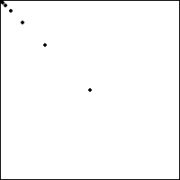
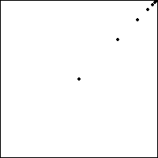
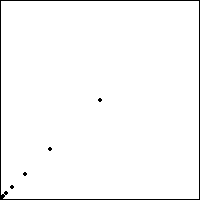
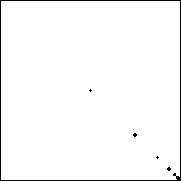

| The simplest repeated sequence is constant, just repeat the same number
forever. For example, 11111... = 1∞. |
| Starting with (1/2, 1/2),
applying T1(x, y) = (x/2, y/2)
repeatedly produces the sequence of points |
| T1(1/2, 1/2) = (1/4, 1/4), |
| T1(1/4, 1/4) = (1/8, 1/8), |
| T1(1/8, 1/8) = (1/16, 1/16), |
| ... |
|
| converging to the
lower left corner of the unit square, as pictured below. |
| Because it is gotten by applying T1 infinitely many times, the
address of this point is 11111... = 1∞. |
| Recalling
|
| T1(x, y) = (x/2, y/2) = |
((x+0)/2, (y+0)/2), |
the midpoint of (x, y) and (0, 0) |
| T2(x, y) = (x/2, y/2) + (1/2, 0) = |
((x+1)/2, (y+0)/2), |
the midpoint of (x, y) and (1, 0) |
| T3(x, y) = (x/2, y/2) + (0, 1/2) = |
((x+0)/2, (y+1)/2), |
the midpoint of (x, y) and (0, 1) |
| T4(x, y) = (x/2, y/2) + (1/2, 1/2) = |
((x+1)/2, (y+1)/2), |
the midpoint of (x, y) and (1, 1) |
|
| we see the cycles 2∞,
3∞, and 4∞ generate sequences of points that converge to
(1, 0), (0, 1), and (1,1), respectively. |
|  |
 |
| 3∞ |
4∞ |
|  |
 |
| 1∞ |
2∞ |
|